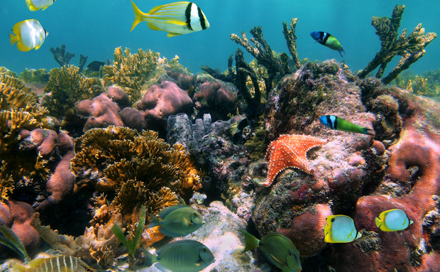

Recifes de Coral
Entre os elementos mais valiosos da natureza estão os recifes de coral. Eles abrigam a maior variedade de espécies dos oceanos. Você pode pensar neles como florestas tropicais subaquáticas — cheias de componentes vivos e não vivos que, juntos, criam um dos ecossistemas mais exclusivos e importantes do mundo.


